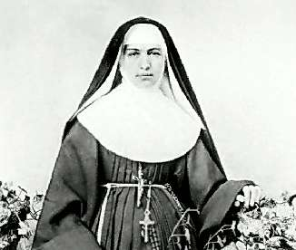

Борис Акунин
Мой календарь
Святых угодников очень много - тысячи. Сегодня день памяти святой Марианны Коуп, которую канонизировали совсем недавно, уже в двадцать первом веке.
Это американка немецкого происхождения, монахиня-францисканка. В 1883 году, будучи 45 лет от роду, она отправилась на верную смерть, притом страшную - медленную, безобразную, когда человек гниет заживо, а все шарахаются от него в отвращении.
Марианна уплыла облегчать страдания прокаженных на Гавайские острова, где неизлечимая, внушавшая всем суеверный ужас болезнь была особенно распространена. Герои, работавшие в лепрозории, неминуемо заражались и в конце концов сами становились пациентами.
Что произошло дальше, вы уже догадались. Разумеется, Чудо Господне - без него даже самых самоотверженных героев церковь в святые не принимает. (Не мое дело, но ей-богу зря. Героизм без чудес, по-моему, еще более достоин прославления).
Марианна облегчала страдания несчастных целых тридцать лет, но не заразилась, а становилась с годами только прекрасней.
Сегодня очень хороший день, чтобы браться за хорошее, но при этом рискованное дело. Вас будет оберегать святая Марианна.